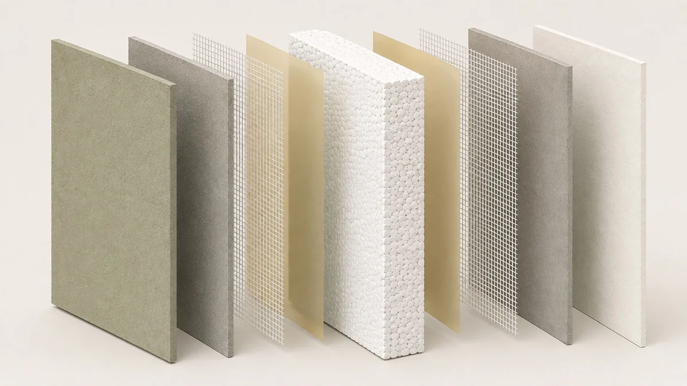

Fjäll Group / Eco hospitality / 06
Ulaman Eco Resort
Organic architecture. A coordinated backbone.
Bali, Indonesia · Eco hospitalityCompany-profile project

- Place
- Bali, Indonesia
- Programme
- Eco hospitality
- Integration
- Bamboo · GX-100 · BEMMELS
Fjäll’s documented contribution
Insulated building systems integrated with organic architecture
Architecture: Inspiral, as credited in the profile
Project-specific dates, delivery status and detailed scope are available from the team.
Fjäll’s profile describes GX-100 panels and BEMMELS anchors working with Inspiral’s bamboo architecture.
GX 100 panels · Bamboo integration · BEMMELS anchors

Material interfaces matter as much as individual components. Discuss the architecture, the envelope and the connections as a whole.
Discuss a similar projectNo finished brief needed. Start with a place, a question or an ambition.